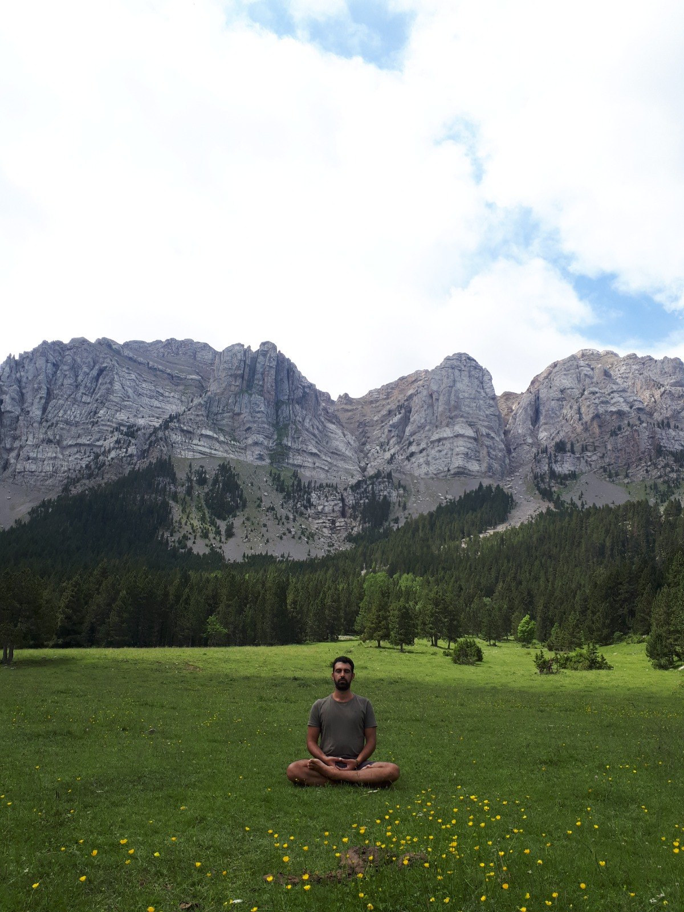

Η Διαδρομή The Journey
Το όνομά μου είναι Γεώργιος Ανανιάδης και ζω στη Ρόδο. Το 2020 άρχισα να μπαίνω στη διαδικασία της αυτογνωσίας. Ανακάλυψα ότι κάτι δεν πήγαινε καλά στη ζωή μου τα τελευταία χρόνια και είδα ότι χρειαζόταν να κάνω αλλαγές.
Από τότε άρχισα να εξερευνώ τον εαυτό μου μέσα από σεμινάρια επικοινωνίας, life coaching, αυτογνωσία και ηγεσία, mindfulness, μη-βίαιη επικοινωνία, συνθετική ψυχοθεραπεία, βιοθυμική ψυχοθεραπεία (ύπνωση), μαθήματα yoga, σωματική και υπαρξιακή ψυχοθεραπεία — που συνεχίζω ακόμα — και ανακάλυψα τον διαλογισμό μέσα σε μερικά από αυτά.
Ο διαλογισμός με τράβηξε βαθιά. Άρχισα να ψάχνω δασκάλους όπως ο Jiddu Krishnamurti, ο Osho, ο Mooji. Είχα ευρήματα που δεν μπορούσα να κρατήσω μόνο για τον εαυτό μου.
Έτσι ανακάλυψα το πρόγραμμα εκπαίδευσης δασκάλων διαλογισμού στην Amrita και τον Μιχάλη Μουρτζή, που με δίδαξε πώς να διαλογίζομαι με έναν πραγματικά αναλυτικό και κατανοητό τρόπο — ώστε ο νους να προσαρμόζεται εύκολα. Η ενέργεια και η καθοδήγησή του άλλαξαν τη ζωή μου.
My name is George Ananiadis and I live in Rhodes Greece. I have started to enter into selfknowledge on 2020. I discovered that something was off with my life the past years and I saw that I need to make some changes.
Since then I have entered into exploring myself through communication seminars, life coaching, self knowledge and leadership seminars, mindfulness seminars, non violent communication seminars, synthetic psychotherapy, biothymic psychotherapy (hypnosis), yoga classes, somatic and existential psychotherapy (which I still continue) and discovered meditation into some of the above.
I got really interested in meditation and started to search about it in some famous teachers like Jiddu Krishnamurti, Osho, Mooji etc. I had some really interesting and liberational findings.
So, I knew I can't keep them just for myself and I discovered the meditation teachers programme in Amrita and Michalis Mourtzis, who taught me how to really meditate using a very analytical and understandable way, so it was easy for my mind to adapt, plus his unique energy and guidance who are life changing for me.

Η Παρουσία The Presence
Στις συνεδρίες μας, είτε στη Μεσαιωνική Πόλη είτε δίπλα στο κύμα στο Φαληράκι, η εστίαση είναι στην καθαρή παρατήρηση. Χωρίς βιασύνη, χωρίς τον θόρυβο των προσδοκιών. Μόνο ο ήχος της αναπνοής και η δόνηση της στιγμής.
In our sessions, whether in the Medieval Town or by the waves in Faliraki, the focus is on pure observation. No rush, no noise of expectations. Only the sound of breath and the vibration of the moment.
Συνεδρίες Sessions
Ομαδικός Διαλογισμός Group Meditation
60 λεπτά · Ρόδος ή Φαληράκι 60 minutes · Rhodes or Faliraki
€10
Ιδιωτική Συνεδρία Private Session
Προσαρμοσμένη στη δική σας «τοπολογία» Tailored to your own "topology"
Κατόπιν συνεννόησης Upon arrangement
Η σιωπή είναι η γλώσσα των πάντων. Silence is the language of everything.
Επικοινωνία μέσω WhatsApp Contact via WhatsApp